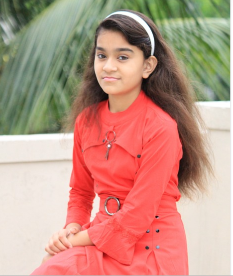

1. Bangla kobir kobita
বাংলা-কবিতা ডট কম ওয়েবসাইটটি বর্তমান সময়ে বাংলা কবিতার সবচেয়ে জনপ্রিয় ও সমৃদ্ধ ওয়েব পোর্টাল। এ প্রজন্মের শতাধিক কবি আমাদের কবিতার আসরে প্রতিদিন কবিতা প্রকাশ করছেন। কবিতা প্রকাশের পাশাপাশি রয়েছে কবি ও কবিতার উপর নানারকম আলোচনা, কবিতার বই ও আবৃত্তি প্রকাশের সুবিধা। উপস্থিত সদস্যেরা যেমন সমমনা কবি ও সদস্যদের সাথে পরিচিত হতে পারছেন, পাশাপাশি ওয়েবসাইটের সার্বিক আবহে ঋদ্ধ হচ্ছেন বাংলা সাহিত্যের কাব্যিক আবেশে। এছাড়াও এখানে রয়েছে বাংলার খ্যাতিমান কবিদের সহস্রাধিক কবিতার এক সংগ্রহশালা, যা নিয়মিত আরও সমৃদ্ধ হচ্ছে। আপনি যদি সৌখিন কবি, আবৃত্তিকার, অথবা কবিতা-প্রেমী যে কেউ হয়ে থাকেন, তবে জানবেন এই ওয়েবসাইটটি আপনার জন্যেই তৈরি করা হয়েছে! আমাদের বিশ্বাস আমাদের এই ক্ষুদ্র প্রচেষ্টা বাংলা সাহিত্য, কবিতা ও আমাদের দেশীয় কৃষ্টি-কালচারকে বিশ্বের নানা প্রান্তে ছড়িয়ে থাকা নতুন প্রজন্মের বাঙালিদের কাছে আরও পরিচিত করে তুলবে। বিস্তারিত